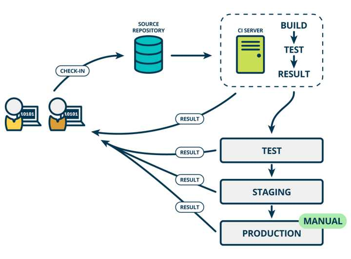
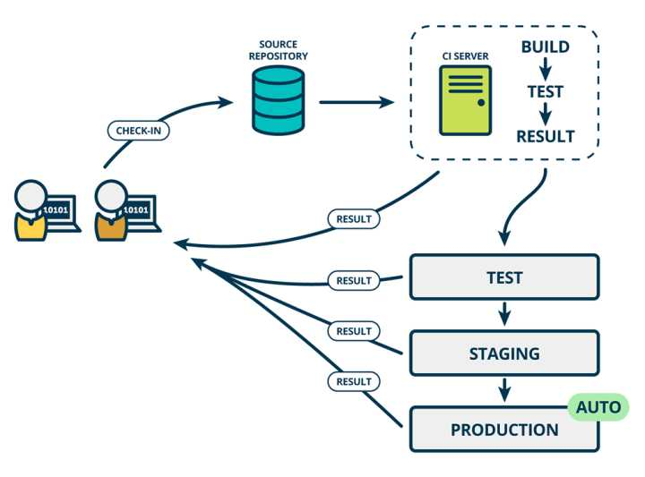

概述
互联网软件的开发和发布，已经形成了一套标准流程，最重要的组成部分就是持续集成（Continuous integration，简称CI）。
持续集成
持续集成指的是，频繁地（一天多次）将代码集成到主干。它的好处主要有两个：
- 快速发现错误。每完成一点更新，就集成到主干，可以快速发现错误，定位错误也比较容易。
- 防止分支大幅偏离主干。如果不是经常集成，主干又在不断更新，会导致以后集成的难度变大，甚至难以集成。
Martin Fowler 说过，”持续集成并不能消除 Bug，而是让它们非常容易发现和改正。”

持续集成强调开发人员提交了新代码之后，立刻进行构建、（单元）测试。根据测试结果，我们可以确定新代码和原有代码能否正确地集成在一起。
持续集成就是将最新的代码变为可交付的形式，顶多在加部署在开发环境，供个人测试。
与持续集成相关的，还有两个概念，分别是持续交付和持续部署。
持续交付
持续交付（Continuous delivery，简称CD）指的是，频繁地将软件的新版本，交付给质量团队或者用户，以供评审。如果评审通过，代码就进入生产阶段。
持续交付可以看作持续集成的下一步。它强调的是，不管怎么更新，软件是随时随地可以交付的。
持续交付的前提是，代码必须是一个里程碑式的完成，比如此阶段开发完成。持续交付就是将这个里程碑式的代码交付给测试、类生产环境（部署在这里）。

持续交付在持续集成的基础上，将集成后的代码部署到更贴近真实运行环境的「类生产环境」（production-like environments）中。比如，我们完成单元测试后，可以把代码部署到连接数据库的 Staging 环境中更多的测试。如果代码没有问题，可以继续手动部署到生产环境中。
持续部署
持续部署（continuous deployment）是持续交付的下一步，指的是代码通过评审以后，自动部署到生产环境。
持续部署的目标是，代码在任何时刻都是可部署的，可以进入生产阶段。
持续部署的前提是能自动化完成测试、构建、部署等步骤。
